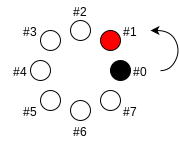
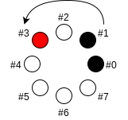
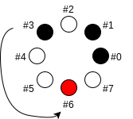
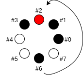
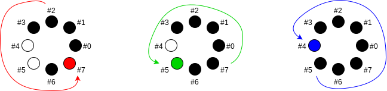

This paper investigates a non-uniform way to visit a circular set without repetition.
Interestingly, it turns out that only circular sets of $2^q$ elements permit this.
Definition: circular set
Take $N$ holes arranged in a circle:
Example circular set with $N=8$
...pick one as the first hole #0, chose a direction
(e.g. counterclockwise), and name the following holes
accordingly #1, #2, ..., #($N-1$):
Circular set ($N=8$) with direction and numbers
Filling the set: an example ($N=8$)
Fill the first hole #0

Move $i=1$ hole forward, and fill the destination hole #1

Move $i=2$ holes forward, and fill the destination hole #3

Move $i=3$ holes forward, and fill the destination hole #6

Move $i=4$ holes forward, and fill the destination hole #2

Last steps: We repeat the process, moving
forward:
$i=5$ holes (to #7),
then $i=6$ holes (to #5),
and finally $i=7$ holes (to #4).
At this point all holes have been filled, so we stop.
The order in which we filled the holes:
$ [ #0, #1, #3, #6, #2, #7, #5, #4 ] $
can be seen as a permutation of the first $N=8$ non-negative
integers.
Success and failure
Repetitions are not accepted, i.e., whenever we land on a
hole that has already been filled, we call that a failure.
Example: $N=3$:
Successes seem to correspond to powers of two: $N=2^q$ where $q \in \mathbb{N}_+^*$
Main result
A circular set of $N$ elements can be visited in the above–described non–uniform way if and only if $N$ is a power of two ($N=2^q$).
Formally: we define the property:
$ P_{N} \triangleq$ "for
the circular set of $N$ holes, for each step $i = 1 \dots N$, we land on an
empty hole (an thus after the $N$ steps all holes are filled)".
The order in which we fill the holes, e.g. for $N=8$:
$[ #0, #1, #3, #6, #2, #7, #5, #4 ]$
can be seen as a permutation of the first $N=8$ non-negative
integers.
What happens if we repeat this permutation?
N=8 (2^3)
step 0 current 0,1,2,3,4,5,6,7
step 1 current 0,1,3,6,2,7,5,4
step 2 current 0,1,6,5,3,4,7,2
step 3 current 0,1,5,7,6,2,4,3
step 4 current 0,1,7,4,5,3,2,6
step 5 current 0,1,4,2,7,6,3,5
step 6 current 0,1,2,3,4,5,6,7
=> period: 6
So we can observe a periodicity.
What about other values of $N=2^q$?
Open questions: For powers of two $N=2^q$, can someone derive a formula
giving the period as a function of $N$, i.e. the series (2,6,14,30,2280,...)?
(O2): About other filling methods
This paper investigated the particular filling method, where at each step
$i$ we move $j=i$ holes forward, thus defining the series:
$$ (j)_i = (1,2,3,\dots,N-1) $$
Besides the obvious "uniform" filling method, where we move
1 hole forward each time:
$$ (j)_i = (1,1,1,\dots,1) $$
...are there other "non-uniform" filling methods without repetition,
at least for $N$ being a power of two?
For example, for $N=2^2=4$ the answer is yes. Besides the
filling method investigated so far:
$$ (j)_i = (1,2,3) $$
there is also:
$$ (j)_i = (3,2,1) $$
which is equivalent to invert the direction. If we additionally
restrict $(j)_i$ being itself a permutation of
$(1,2,3,...,N-1)$, these are the only two possibilities for $(j)_i$ for
$N=4$.
Open question: Are there other methods $(j)_i$ to fill
without repetition, which work for all $N$ powers of two?
Especially when we restrict the series $(j)_i$ being itself
a permutation of $(i)_i = (1,2,3,...,N-1)$ ?
Appendices
(A1) Show that $N\ power\ of\ 2 \Rightarrow\ P_N\ true$
Let us assume $H_1$ and $H_2$:
$H_1$
$N$ is a power of two: $\exists\ q\ \in \mathbb{N}_+^*\ s.t.\ N=2^q$
$H_2$
$P_N\ false$, i.e. in at least one of the $N$ steps $i=1 \dots N$, we land on a hole that has already been filled: $$\exists (a,b)\in\mathbb{N}^2\ s.t.\ 0 \le a \lt b \lt N\ and\ V_a \equiv V_b\ [N]$$
where:
$V_i$ is, at step $i$, the total number of holes we've been moving since the beginning: $$V_i \triangleq \sum_{j=1}^{i} j = \frac{i(i+1)}{2}$$
$V_a \equiv V_b\ [N]$ means congruence modulo $N$: $$\exists k \in \mathbb{N}\ s.t.\ V_b - V_a = k \cdot N$$
$H_2$ implies: $$\exists k \in \mathbb{N}\ s.t.\ \frac{b(b+1)}{2} - \frac{a(a+1)}{2} = k \cdot N$$
which we can rewrite:
$$b^2 - a^2 + b - a = 2 \cdot k \cdot N$$
$$(b - a) \cdot (b + a + 1) = 2 \cdot k \cdot N \hspace{2.5em} (\alpha)$$
Observations: $b-a$ and $b+a$ have same parities, hence
$b-a$ and $b+a+1$ have opposite parities,
i.e. one is odd and the other one is even.
On the right hand side, $2 \cdot N = 2^{q+1}$ is a power of two,
thus $k$ must be odd. Moreover, since $(b - a)$, $(b+a+1)$ and $2 \cdot N$
are all non-negative, we have $k > 0$.
Summarized: $k \ge 1$, and $k$ is the only odd term on the right hand side.
Let us assume $k = 1$. Because the two terms on the left hand side have opposite parities, then either $a+b+1=1$ (impossible), or
$b-a=1$ i.e. $b=a+1$ so $(\alpha)$ can be written: $1 \cdot 2
\cdot b = 1 \cdot 2 \cdot N$, and thus $b=N$, which is impossible as well.
Therefore: $k$ is odd and $k \ge 3$.
(A1.a) Let us assume $b-a=k$
$(\alpha)$ can be rewritten:
$$k \cdot (1+2a+k) = 2 \cdot k \cdot N$$
$$1+2a+k = 2\cdot N$$
$$a = N - \frac{k+1}{2}$$
$$b = a + k = N + \frac{2k - k - 1}{ 2 }$$
$$b = N + \frac{k-1}{2}$$
Since $k \ge 3$, we have $b \gt N$, which is impossible.
(A1.b) Let us assume $a+b+1=k$
i.e.
$$b-a = b-(k - (b+1)) = 2b - k + 1$$
$(\alpha)$ can be rewritten:
$$(2b - k + 1) \cdot k = 2 \cdot k \cdot N$$
$$2b - k + 1 = 2 N$$
$$b = N + \frac{k-1}{2}$$
Since $k \ge 3$, we have $b \gt N$, which is impossible.
Conclusion of (A1)
For $q \in \mathbb{N}_+^*$ and $N=2^q$, assuming $P_N$ false leads to a contradiction, therefore $P_N$ is true. $P_{2^0}=P_1$ is obvious, therefore:
$$\forall q \in \mathbb{N}_+\ P_{2^q}\ true$$
(A2) Show that $N\ not\ a\ power\ of\ 2 \Rightarrow\ P_N\ false$
Formally: we want to show that:
$$ \forall N \in \mathbb{N}_+^* \ s.t.\ log_2 N \notin \mathbb{N}$$
$$ \exists (a,b) \in \mathbb{N}^2 \hspace{1em} 0 \le a \lt b \lt N \hspace{1em} s.t. \hspace{1em} V_a \equiv V_b \ [N] $$
where $V_i \triangleq \frac{i(i+1)}{2}$ is the number of holes we've moved since the beginning.
For $(a,b) \in \mathbb{N}^2$, we define the property:
$$T_{a,b} \hspace{1em} \triangleq \hspace{1em} 0 \le a \lt b \lt N \hspace{0.75em} and\hspace{0.75em} V_a \equiv V_b \ [N]$$
To prove the result, we need to find at least one value of $(a,b)$ that verifies $T_{a,b}$
(A2.1) Case: $N=2p+1$ where $p \in \mathbb{N}_+^*$
Since $V_i \triangleq \frac{i(i+1)}{2}$ we can write:
$$V_{p+1} - V_{p-1} = p+1 \ + \ p = N$$
Thus, $a = p - 1$ and $b = p + 1$ verify $T_{a,b}$.
Transition
It remains to find $(a,b)$ verifying $T_{a,b}$ when $N=2p$ is not a power of two.
(A2.2) Case: $N$ even but not a power of two
i.e.
$$\exists (p,q) \in (\mathbb{N}_+^*)^2 \hspace{1.5em} N=2^q \cdot (2p+1)$$
e.g.
N = 6 = 2*3 q:1 p:1
N = 10 = 2*5 q:1 p:2
N = 12 = 4*3 q:2 p:1
N = 14 = 2*7 q:1 p:3
(A2.2.1) When $p \ge 2^q$
Let $a = p - 2^q$ and $b = p + 2^q$.
We have $0 \le a$ and $a \lt b$ and $N - b = 2^q \cdot 2p - p = p (2^{q+1} - 1) > 0$